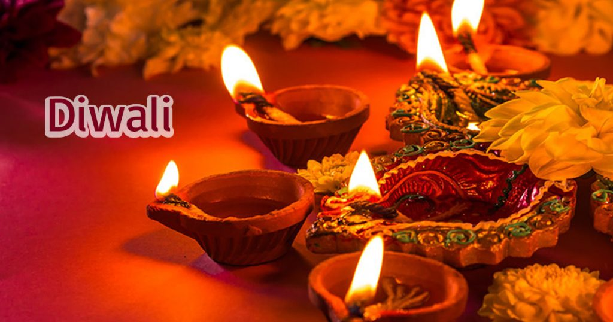

Onam
Celebrated Popularly in Kerala
Diwali
Celebrated through out India
Durga Puja

An auspicious festival
Ganesh Chaturthi

Onam: Onam is the biggest festival of the year in the South Indian state of Kerala. This lengthy harvest festival marks the homecoming of mythical King Mahabali, and it showcases the state's culture and heritage. People decorate the ground in front of their houses with flowers arranged in beautiful patterns to welcome the king. The festival is also celebrated with new clothes, feasts served on banana leaves, folk dance, games, and snake boat races.
Diwali: Diwali honors the victory of good over evil and brightness over darkness. It celebrates Lord Ram and his wife Sita returning to their kingdom of Ayodhya, following the defeat of Ravan and rescue of Sita on Dussehra. It's known as the "Festival of Lights" for all the fireworks, small clay lamps, and candles that are lit to guide their way. For Indian Hindu families, Diwali is the most anticipated festival of the year.
Durga Pooja: The nine nights of the Navaratri festival honor the mother goddess Durga in all her incarnations. The tenth day, called Dussehra, celebrates the defeat of demon king Ravan by Lord Ram and monkey god Hanuman in northern India. It also coincides with Durga's victory over the evil buffalo demon Mahishasura
Ganesh Chaturthi:The spectacular 11-day Ganesh Chaturthi festival honors the birth of the beloved Hindu elephant-headed god, Lord Ganesha. The start of the festival sees huge, elaborately-crafted statutes of Ganesh installed in homes and public podiums, which have been beautifully decorated. The statues are worshiped everyday throughout the festival
Holi:Holi, often referred to as the "Festival of Colors", is one of the best known festivals outside of India. The festival is centered around the burning and destruction of the demoness Holika, which was made possible through unwavering devotion to Lord Vishnu. However, the really fun part involves people throwing colored powder on each other and squirting each other with water guns. This is associated with Lord Krishna, a reincarnation of Lord Vishnu, who liked to play pranks on the village girls by drenching them in water and colors.